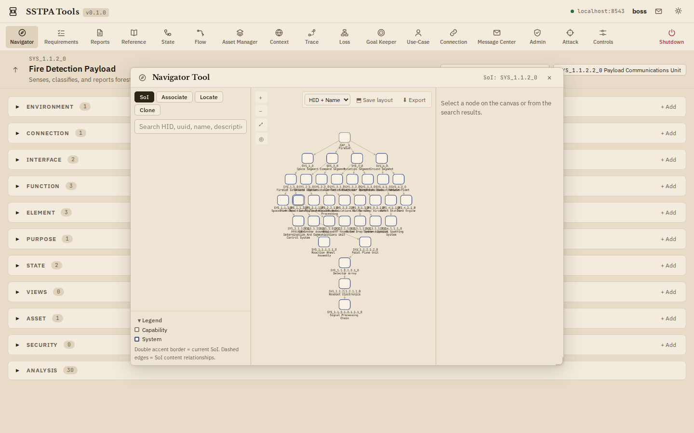
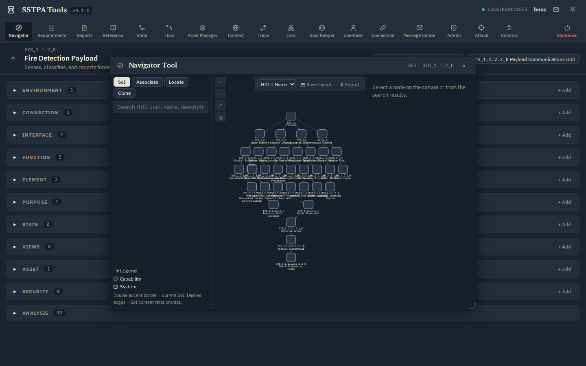

Add-on Tool · Steps 1, 2, 14
Navigator Tool
Traverse the Capability/System hierarchy, select the current SoI, locate nodes by HID / UUID / name, clone nodes (optionally with requirements), and associate an Interface to a Connection owned by another System.
Typical actions
- SoI mode — select a System node → Select as current SoI → confirm.
- Locate — search HID, uuid, name, description, or type; click a match to center the canvas.
- Associate / Clone — cross-SoI association and clone workflows when reuse is intended.
Light (parchment)

Dark (bluish-grey)
